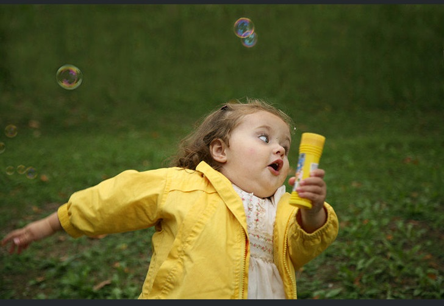
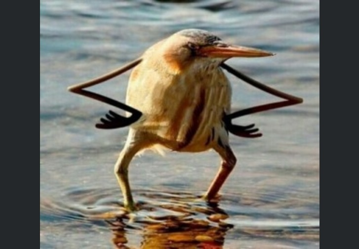

CSS Meme Slider


When it is prohibited to use js and px in that task
When you see a photo of the screen and not a screenshot
This is me running to look at my grades for the Cross-Check
When you're trying to pronounce "tough", "through", "thought", "though" correctly